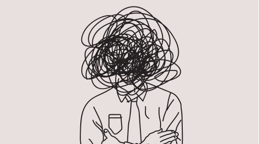

Dean's ultimate depression playlist

Depression, Dean Shalev
March 8th, 2023
songs to get you through the motions
- Track 1 | Mr.Kitty - After Dark
- Track 2 | Ezekiel - help_urself
- Track 3 | Mareux - The Perfect GIrl
You may also like
Playlist 2
Playlist 3
sources
1
2
3